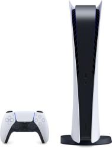
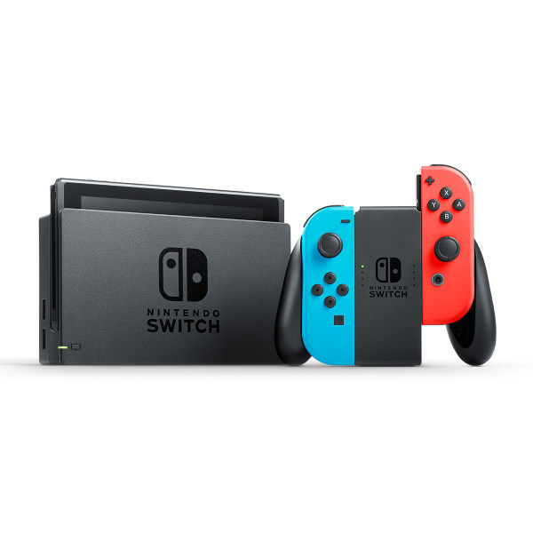
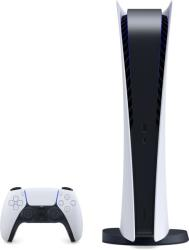
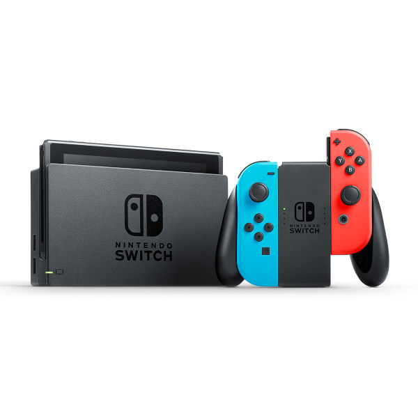
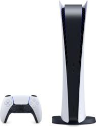
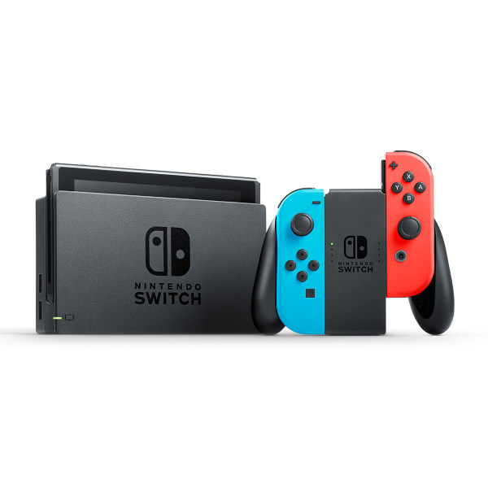
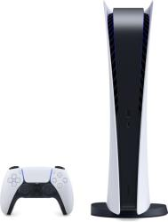
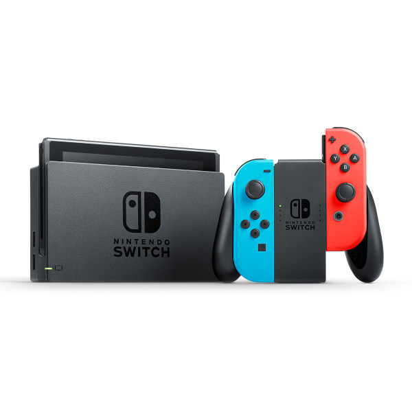

The Xbox Series X utilizes its powerful specs to significantly reduce load times and increase overall game performance and visual fidelity. But, while features such as Quick Resume, Smart Delivery and backwards compatibility give it that extra boost, it’s hard to deny that it’s lacking in key areas, notably significant UI improvements and captivating exclusive launch titles.
The PS5 is a superb console that offers a compelling next-gen gaming experience - and one that will likely only get better as more titles are added to the lineup. The PS5 proves itself to be both powerful and well-designed. A few small issues hold it back from being a five-star product at launch, but otherwise it's a welcome upgrade on the PS4 and an exciting portal to next-gen gameplay.
The Nintendo Switch is one-part handheld and one-part home console, and hopes to be the only device you'll ever need for gaming, wherever you are. The hybrid console is an undeniable success, offering up an exceptional level of handheld graphical quality, while seamlessly transitioning into a home console – though this very adaptability has required compromises on power and functionality compared to the dedicated consoles and handhelds that came before it.